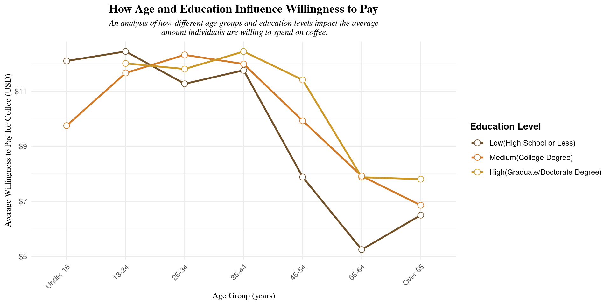
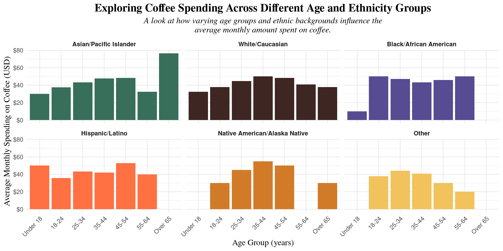
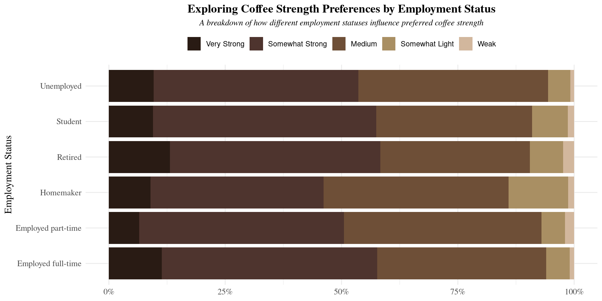
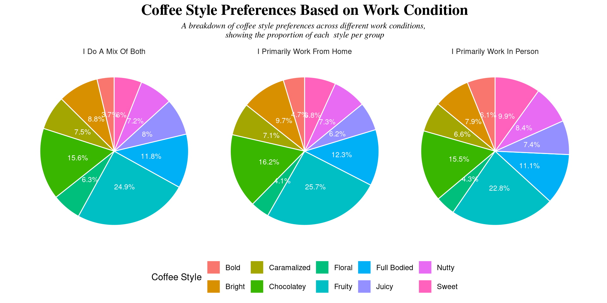

── Attaching core tidyverse packages ──────────────────────── tidyverse 2.0.0 ──
✔ dplyr 1.1.4 ✔ readr 2.1.5
✔ forcats 1.0.0 ✔ stringr 1.5.1
✔ ggplot2 3.5.1 ✔ tibble 3.2.1
✔ lubridate 1.9.4 ✔ tidyr 1.3.1
✔ purrr 1.0.4
── Conflicts ────────────────────────────────────────── tidyverse_conflicts() ──
✖ dplyr::filter() masks stats::filter()
✖ dplyr::lag() masks stats::lag()
ℹ Use the conflicted package (<http://conflicted.r-lib.org/>) to force all conflicts to become errorsBrewing Demographics
Introduction
For our project, we chose to use the Great American Coffee Taste Test dataset, which was collected during an event held by world champion barista James Hoffmann and the coffee company Cometeer in October 2023. During this event, participants were invited to order four different coffees from Cometeer and then complete a survey about their preferences. The survey data, which was later analyzed by data blogger Robert McKeon Aloe, provides insights into various aspects of coffee preferences, such as coffee strength, style, and various demographic information.
While the dataset offers valuable information about coffee preferences, it is important to note that the participants may not be fully representative of the general American population. Since the survey was conducted as part of a YouTube event, the participants were likely more engaged with coffee culture and may have had specific preferences that differ from the broader public. Additionally, the self-selecting nature of the survey means that the demographic composition of the participants may not perfectly match that of the U.S. population, potentially introducing biases related to coffee enthusiasts and individuals with access to the event.
Question 1: Exploring Coffee Spending Habits by Demographics
Introduction
Our project seeks to explore how different demographics influence coffee spending habits. Specifically, we aim to determine if certain demographics, such as age, level of education, and ethnicity, spend more on coffee than others. To answer this question, we focused on three key demographic variables: age, education level, and ethnicity. We compared the average amount each age group is willing to spend on a single coffee, with a breakdown by education level. Additionally, we calculated the average total spending on coffee per month for each age group and analyzed how this varies across the different demographic categories.
The dataset provided columns related to demographics (ethnicity_race, education_category, and age) and coffee spending behaviors (most_willing and total_spend). By cross-examining these datasets, we gained insights into the relationship between demographic factors and coffee spending. We were particularly interested in this question because understanding these spending patterns could offer valuable insights for businesses in the coffee industry, as well as highlight how coffee consumption may vary across different segments of the population.
Approach
For Plot 1, we used a line plot to show how average willingness to spend on coffee varies by age group, with separate lines for different education levels (high school or less, college, higher education graduate). Even though age is a discrete variable in this case, the line plot is effective here because it allows us to compare trends between the different education levels across the age groups. The lines help illustrate how each educational group’s spending behavior changes as they age, and this format is particularly useful for emphasizing trends or patterns in categorical data. It provides a clear visual representation of how age and education level interact when it comes to coffee spending, which would be harder to distinguish with other charts.
For Plot 2, we chose a faceted bar plot with age groups on the x-axis and average total monthly spending on the y-axis, faceted by ethnicity. Bar charts are typically used to compare metric values across different categories, which is why it works well for this dataset. The bars visually represent the scale of spending within each group, and the faceting allows us to compare how ethnic groups differ in their coffee spending patterns. The clear separation of bars for each age group and ethnicity makes it easy to compare spending across different demographics, something other plot types, like line plots or scatter plots, may not highlight as effectively.
Analysis
coffee_df <- coffee_df %>%
mutate(age = case_when(
age == "18-24 years old" ~ "18-24",
age == "25-34 years old" ~ "25-34",
age == "35-44 years old" ~ "35-44",
age == "45-54 years old" ~ "45-54",
age == "55-64 years old" ~ "55-64",
age == "<18 years old" ~ "Under 18",
age == ">65 years old" ~ "Over 65",
TRUE ~ age
))
coffee_df <- coffee_df %>%
mutate(most_willing_numeric = case_when(
most_willing == "Less than $2" ~ 1,
most_willing == "$2-$4" ~ 3,
most_willing == "$4-$6" ~ 5,
most_willing == "$6-$8" ~ 7,
most_willing == "$8-$10" ~ 9,
most_willing == "$10-$15" ~ 12.5,
most_willing == "$15-$20" ~ 17.5,
most_willing == "More than $20" ~ 22,
TRUE ~ NA_real_
))
coffee_df <- coffee_df %>%
mutate(education_category = case_when(
education_level %in% c("Less than high school", "High school graduate") ~ "Low(High School or Less)",
education_level %in% c("Some college or associate's degree", "Bachelor's degree") ~ "Medium(College Degree)",
education_level %in% c("Master's degree", "Doctorate or professional degree") ~ "High(Graduate/Doctorate Degree)",
TRUE ~ NA_character_
))
filtered_df <- coffee_df %>%
filter(!is.na(most_willing_numeric), !is.na(age), !is.na(education_category))
mean_willing <- filtered_df %>%
group_by(age, education_category) %>%
summarise(mean_most_willing = mean(most_willing_numeric, na.rm = TRUE), .groups = "drop")
age_order <- c("Under 18", "18-24", "25-34", "35-44",
"45-54", "55-64", "Over 65")
mean_willing$age <- factor(mean_willing$age, levels = age_order)
edu_order <- c("Low(High School or Less)", "Medium(College Degree)", "High(Graduate/Doctorate Degree)")
mean_willing$education_category <- factor(mean_willing$education_category, levels = edu_order)
edu_colors <- c(
"Low(High School or Less)" = "#6F4F28", # Rich brown (Classic Coffee)
"Medium(College Degree)" = "#D17B29", # Warm orange-brown (Cappuccino)
"High(Graduate/Doctorate Degree)" = "#cc9929" # Soft golden yellow (Latte)
)
ggplot(mean_willing, aes(x = age, y = mean_most_willing, group = education_category, color = education_category)) +
geom_line(linewidth = 1) +
geom_point(size = 3, shape = 21, fill = "white") +
labs(
title = "How Age and Education Influence Willingness to Pay",
subtitle = "An analysis of how different age groups and education levels impact the average\n amount individuals are willing to spend on coffee.",
x = "Age Group (years)",
y = "Average Willingness to Pay for Coffee (USD)",
color = "Education Level"
) +
theme_minimal() +
scale_color_manual(values = edu_colors) + # Apply the custom colors
scale_y_continuous(labels = scales::dollar_format()) +
theme(
plot.title = element_text(hjust = 0.5, face = "bold", size = 14, family = "serif"),
plot.subtitle = element_text(hjust = 0.5, face = "italic", size = 10, family = "serif"),
legend.position = "right",
legend.title = element_text(face = "bold"),
axis.title = element_text(size = 10, family = "serif"),
axis.text.x = element_text(angle = 45, hjust = 1)
)
coffee_df <- coffee_df %>%
mutate(total_spend_numeric = case_when(
total_spend == "Less than $2" ~ 1,
total_spend == "<$20" ~ 10,
total_spend == "$20-$40" ~ 30,
total_spend == "$40-$60" ~ 50,
total_spend == "$60-$80" ~ 70,
total_spend == "$80-$100" ~ 90,
total_spend == ">$100" ~ 110,
TRUE ~ NA_real_
))
# Remove the outlier
coffee_df <- coffee_df %>%
filter(!(ethnicity_race == "Other (please specify)" & age == "Under 18"))
filtered_df_race_spend <- coffee_df %>%
filter(!is.na(total_spend_numeric), !is.na(age), !is.na(ethnicity_race)) %>%
mutate(ethnicity_race = as.character(ethnicity_race))
mean_spend_race <- filtered_df_race_spend %>%
group_by(age, ethnicity_race) %>%
summarise(mean_total_spend_race = mean(total_spend_numeric, na.rm = TRUE), .groups = "drop")
mean_spend_race$ethnicity_race <- mean_spend_race$ethnicity_race %>%
fct_recode("Other" = "Other (please specify)")
ethnicity_order <- c("Asian/Pacific Islander", "White/Caucasian",
"Black/African American", "Hispanic/Latino",
"Native American/Alaska Native", "Other")
mean_spend_race$ethnicity_race <- factor(mean_spend_race$ethnicity_race, levels = ethnicity_order)
mean_spend_race$age <- factor(mean_spend_race$age, levels = age_order, ordered = TRUE)
ethnicity_colors <- c(
"Asian/Pacific Islander" = "#376F5A", # Coffee brown (darker shade)
"White/Caucasian" = "#3E2723", # Dark coffee brown
"Black/African American" = "#574B92", # Darker brown, a bit more reddish
"Hispanic/Latino" = "#FF7043", # Light orange-brown
"Native American/Alaska Native" = "#D17B29", # Rich orange-brown
"Other" = "#F2C35C" # Light coffee yellow (Latte)
)
ggplot(mean_spend_race, aes(x = age, y = mean_total_spend_race, fill = ethnicity_race)) +
geom_col(position = "dodge") +
facet_wrap(~ ethnicity_race) +
labs(
title = "Exploring Coffee Spending Across Different Age and Ethnicity Groups",
subtitle = "A look at how varying age groups and ethnic backgrounds influence the\naverage monthly amount spent on coffee.",
x = "Age Group (years)",
y = "Average Monthly Spending on Coffee (USD)"
) +
theme_minimal() +
scale_y_continuous(labels = scales::dollar_format()) +
scale_fill_manual(values = ethnicity_colors) +
theme(
plot.title = element_text(face = "bold", size = 16, family = "serif", hjust = 0.5),
plot.subtitle = element_text(face = "italic", size = 12, family = "serif", hjust = 0.5),
strip.text = element_text(face = "bold"),
axis.text.x = element_text(angle = 45, hjust = 1),
axis.title = element_text(size = 12, family = "serif"),
legend.position = "none" # Remove legend as it's redundant due to faceting
)
Discussion
Plot 1
Typically, we saw that individuals with lower education levels were less willing to spend more money on coffee, while people with higher education were more likely to spend more. Since education level is often linked with age (e.g., graduate school typically comes after 21), the data for high school-only education was less informative, as a majority of people in that category were younger (around 20 years old) and still in high school. Starting from age 25, we observed a general trend where individuals with higher education were more willing to spend on coffee. We can speculate that this is because higher education often leads to higher-paying jobs, meaning this group has more disposable income to spend on convenience or nonessential goods like coffee. Additionally, higher education can lead to increased career expectations, where coffee is seen as a tool for networking or maintaining a busy, professional lifestyle.
We also observed that willingness to spend on coffee decreases with age, particularly after the age of 44. One possible explanation for this could be a shift in priorities as people grow older, with health concerns, family responsibilities, and retirement planning becoming more important. As people get older, they might become more mindful of spending and seek more economical options. Other factors could include changing lifestyle habits, such as reducing caffeine intake for health reasons or shifting away from daily coffee consumption.
Plot 2
The plot displays the mean total spent monthly on coffee across different age groups and ethnicities. One noticeable trend is that spending patterns vary by ethnicity and age group, with some groups showing distinct peaks in spending. For instance, among Asian/Pacific Islanders, there is a notable increase in spending for those aged older than 65 years old, whereas Black/African American individuals exhibit a more consistent spending pattern across most age groups, except for a lower value among those under 18 years old. Another interesting observation is the high spending among the 18-24 age group in the “Other (please specify)” category, which may suggest a unique behavioral trend or a data anomaly. In contrast, White/Caucasian and Hispanic/Latino individuals have relatively stable spending patterns across age groups, with a slight increase in middle-aged categories. Native American/Alaska Native individuals tend to have more spending variation, with a peak in the 45-54 age group. These variations may be influenced by cultural preferences, income levels, access to coffee shops, or lifestyle factors.
Question 2: Exploring How Work Settings Affect Coffee Preferences
Introduction
The question we are trying to answer is whether factors such as remote, hybrid, or in-person work arrangements, as well as employment status, influence an individual’s overall coffee preferences. To explore this, we focused on comparing the “work from home” (WFH) and employment status demographics to individuals’ preferred coffee styles (e.g., fruity, nutty) and the strength of their coffee. Specifically, we analyzed the columns for WFH, employment status, strength, and style.
We were interested in this question because coffee preferences can often reflect lifestyle and routines. Since work environments can significantly impact daily habits, including coffee consumption, understanding how these factors correlate can offer valuable insights into the way people approach coffee, particularly in terms of flavor and strength. This also highlights how the shift in work environments may influence coffee culture and consumer choices.
Approach
For Plot 1, we used a stacked bar plot to illustrate how coffee strength preferences vary by employment status. Since employment status is categorical and coffee strength is ordinal (Weak → Very Strong), a stacked bar chart effectively displays the proportion of each coffee strength category within different employment groups. This approach is particularly useful for comparing how the distribution of coffee strength preferences differs across employment statuses. Unlike other visualizations such as line plots, which emphasize trends, the stacked bar format highlights the relative proportion of preferences within each group, making it easier to identify differences in coffee strength preferences between categories such as full-time employees, students, retirees, and homemakers.
For Plot 2, we used a faceted pie chart to compare coffee style preferences across different work settings (Work-from-Home, In-Person, and Hybrid). Since coffee style is categorical, pie charts are an effective way to show proportional distributions and reveal how preferences shift between different work environments. Faceting the pie charts by work setting allows for a direct side-by-side comparison, making it easy to see whether certain coffee styles are more favored by remote vs. in-person workers. This approach provides a clear representation of preference differences that might be harder to interpret with dot charts or other visualizations.
Analysis
coffee_df <- coffee_df %>%
mutate(
strength = str_to_title(strength),
style = str_to_title(style),
wfh = str_to_title(wfh)
)
# Define Strength Order
strength_levels <- c("Weak", "Somewhat Light", "Medium", "Somewhat Strong", "Very Strong")
coffee_df <- coffee_df %>%
mutate(strength = factor(strength, levels = strength_levels, ordered = TRUE))
# Remove NA values
filtered_strength_df <- coffee_df %>%
filter(!is.na(strength), !is.na(employment_status)) %>%
mutate(strength = factor(strength, levels = strength_levels, ordered = TRUE))
# ---- PLOT 1: Employment Status vs. Coffee Strength ----
ggplot(filtered_strength_df, aes(x = employment_status, fill = strength)) +
geom_bar(position = "fill") +
labs(
title = "Exploring Coffee Strength Preferences by Employment Status",
subtitle = "A breakdown of how different employment statuses influence preferred coffee strength",
x = "Employment Status",
y = "Proportion of Responses",
fill = "Strength Level:"
) +
scale_fill_manual(values = c("#D2B79D","#A98F63","#6E4F37","#4E342E","#291b14"),
breaks = strength_levels,
guide = guide_legend(reverse = TRUE)) +
theme_minimal() +
scale_y_continuous(labels = scales::percent) +
coord_flip() +
theme(
legend.position = "top",
axis.title.x = element_blank(),
plot.title = element_text(face = "bold", size = 14, family = "serif",hjust = 0.5),
plot.subtitle = element_text(face = "italic", size = 10, family = "serif",hjust = 0.5),
axis.title = element_text(size = 12, family = "serif"),
axis.text = element_text(size = 10, family = "serif"),
legend.title = element_blank()
)
filtered_style_df <- coffee_df %>%
filter(!is.na(style), !is.na(wfh))
style_summary <- filtered_style_df %>%
group_by(wfh, style) %>%
summarise(count = n(), .groups = "drop") %>%
group_by(wfh) %>%
mutate(prop = count / sum(count))
ggplot(style_summary, aes(x = "", y = prop, fill = style)) +
geom_bar(stat = "identity", width = 1, color = "white") +
coord_polar("y", start = 0) +
facet_wrap(~ wfh) +
geom_text(aes(label = paste0(round(prop * 100, 1), "%")),
position = position_stack(vjust = 0.5), size = 3, color = "white", face= "bold") +
labs(
title = "Coffee Style Preferences Based on Work Condition",
subtitle = "A breakdown of coffee style preferences across different work conditions, \nshowing the proportion of each style per group",
fill = "Coffee Style",
color = "Coffee Style"
) +
theme_minimal() +
theme(
axis.text.x = element_blank(),
axis.text.y = element_blank(),
panel.grid = element_blank(),
legend.position = "bottom",
axis.title.x = element_blank(),
axis.title.y = element_blank(),
plot.title = element_text(face = "bold", size = 18, family = "serif", hjust = 0.5),
plot.subtitle = element_text(face = "italic", size = 10, family = "serif", hjust = 0.5)
)Warning in geom_text(aes(label = paste0(round(prop * 100, 1), "%")), position =
position_stack(vjust = 0.5), : Ignoring unknown parameters: `face`
Discussion
Plot 1
The plot illustrates the preferred coffee strength by employment status, showing the proportion of respondents within each employment category who favor different coffee strengths. A key trend observed is that “Medium” and “Somewhat Strong” coffee preferences dominate across all employment statuses, suggesting a general preference for slightly stronger coffee. Another trend is particularly noticeable among retired individuals and full-time employees, where the proportion of “Very Strong” coffee drinkers is relatively higher than others. Homemakers show a relatively higher proportion of preference for “Somewhat Light” coffee compared to other groups. This might indicate a preference for less intense coffee among those with potentially more flexible schedules or different consumption habits. The lowest proportion of “Weak” coffee preferences across all groups suggests that most coffee drinkers prefer at least some level of strength in their beverages.
Plot 2
The plot illustrates the preferred coffee style by work condition, showing the distribution of coffee style preferences among individuals who work in person, from home, or in a hybrid setting. A key observation is that the “Fruity” coffee style is the most popular across all three groups, with the highest proportion among those who work from home (25.7%) and those who mix both work modes (24.9%). “Chocolatey” and “Full Bodied” coffee styles also have significant representation, particularly among individuals who work from home and those who mix work modes. Those who primarily work in person exhibit a similar preference trend, though with slightly lower proportions. “Bold,” “Juicy,” and “Caramelized” coffee styles have the lowest proportion in all groups, indicating a general lack of preference for these styles compared to the more dominant ones.
Presentation
Our presentation can be found here.
Data
R for Data Science Community. (2024). The Great American Coffee Taste Test (coffee_survey.csv). GitHub. https://github.com/rfordatascience/tidytuesday/blob/main/data/2024/2024-05-14/readme.md